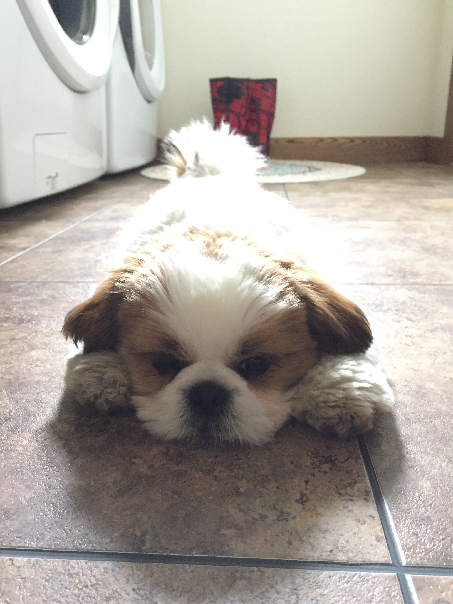
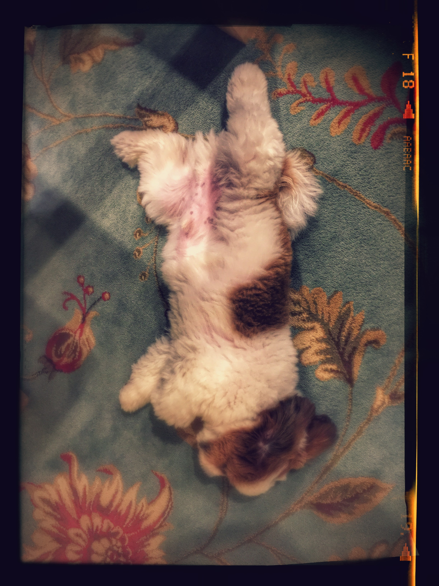

Meet our dog Cliff! Cliff was born on December 23rd, 2016. He's a fun-loving, brindle red and white Shih Tzu. Cliff loves to go for walks, meet new people, take rides in the car, and play with other dogs. He's pretty good at taking naps and eating treats too!
Shih tzus are a "toy" breed that weigh between 10 and 19 pounds as adults. They are also known as the "chrysanthemum dog" or "chinese lion dog". Their name comes from the Chinese word for "lion". They have a short muzzle, underbite, long double coat, and furry tail that curls over their backs. They are loyal, affectionate, and outgoing. You can read more about Shih Tzus at Wikipedia.
The Shih Tzu is a sturdy little dog with a short muzzle and large dark eyes. They have a soft and long double coat. A Shih Tzu should stand no more than 28 cm (11 in.) at the withers and with an ideal weight of 4.5 to 8.6 kg (10 to 19 lbs). Drop ears are covered with long fur, and the heavily furred tail is carried curled over the back. The coat may be of any color, though white and with blazes of grey are frequently seen. The Shih Tzu is slightly longer than tall, and bigger dogs ideally should carry themselves "with distinctly arrogant carriage". A very noticeable feature is the underbite, which is required in the breed standard. The traditional long silky coat, which reaches the floor, requires daily brushing to avoid tangles. Because of their long coat and fast-growing hair, regular grooming is necessary, which may be expensive and should be taken into account when considering adopting one of this breed. Often the coat is clipped short to simplify care. For conformation showing, the coat must be left in its natural state, though trimming for neatness around the feet and anus is allowed. The shorter cut is typically called a "puppy cut" or a "teddy bear cut" when the puppy cut is accompanied by a fuller, rounder face, resembling a stuffed animal.
Although an individual Shih Tzu's temperament varies from dog to dog, the breed has a personality and temperament that is loyal, affectionate, outgoing, and alert. Training and proper socializing must start at a young age for the Shih Tzu to obey basic commands, for the Shih Tzu is prone to stubbornness when it comes to training. While the Shih Tzu is an excellent watch dog because of its alert and active nature, it was not specifically bred for this purpose. Unlike the Lhasa Apso, which was bred to be a sentinel dog that enjoys high perches and is wary of strangers, the Shih Tzu prefers to be close to its companions and will often offer strangers its affection. Because of its friendly nature, the Shih Tzu tends to interact well with other dogs and with children and adults.[citation needed] Composer James Mumsford described the Shih Tzu as "... a dash of lion, several teaspoons of rabbit, a couple of ounces of domestic cat, one part court jester, a dash of ballerina, a pinch of old man, a bit of beggar, a tablespoon of monkey, one part baby seal, (and) a dash of teddy bear."
The Shih Tzu comes in a range of colours that include various shades of gold, white, brown, and black. Other colours include black mask gold, black and white, solid black, solid liver, liver and white, brindle, white, red and white, and grey and white. Thus, when two Shih Tzu mate, there is a possibility that their offspring's coat will be similar to the sire's color, dam's color, tricolor, or a mix of both parents' color in one classification. An interesting point (and often a point of confusion) is that while the coat color of those with black pigmented skin (nose, lips, pads, also referred to as "leather") is determined by the color of the coat itself; the coat color on dogs with either liver or blue pigment is categorized by the color of the pigment. Thus, a parti colored (white and another shade) Shih Tzu with blue pigment is a "blue and white" regardless of the tint of the hair which might very well appear similar to a gold and white or other colors. The same principle applies to solid blue, silver, and silver and white. Sometimes you might see dark brown pigments near the shoulders and between the armpits.
The name comes from the Chinese language word for "lion" because this kind of dog was bred to resemble "the lion as depicted in traditional oriental art." (The Pekingese breed is also called "lion dog" in Chinese.) "Shih Tzu" is the Wade-Giles romanization of the Chinese characters 獅子, meaning lion; this romanization scheme was in use when the breed was first introduced in America. In contemporary China, Pinyin is the predominant system of romanization, which renders it as shīzi. The Mandarin Chinese pronunciation is approximately SHIRR-dzə. Though the Wade-Giles system is often regarded as less intuitive, "Shih Tzu" is a useful linguistic example of both of two cases where the Wade-Giles scheme reflects the use of a syllabic fricative after a corresponding consonant cluster (retroflexes and sibilants) in modern Mandarin. This is a unique phonological feature that does not appear in any other known modern language in their standardized form. Indeed, though the exact classification is still debated (and dialectal variants exist), linguists generally agree that these sounds cannot be represented by conventional symbols in the IPA; hence why an unorthodox approximation "SHIRR" was used earlier in this paragraph. However, the use of a syllabic fricative is often observed in informal English with the paralinguistic expression "Shh!", which may serve as a guide to the pronunciation of "Shih".